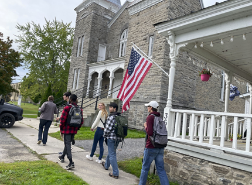
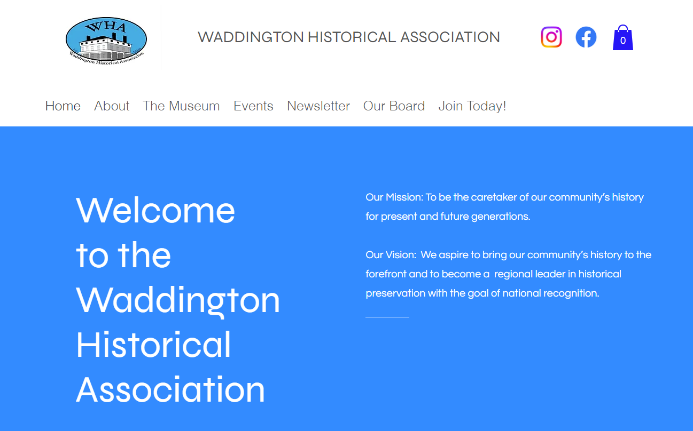

Community Service Reflection
December 2022

The way that I personally approach service has always been focused on doing what I can to help others, ranging from immediate to long-term solutions. However, in the process of approaching service, I want to ensure that I do not overstep the boundaries of the local community, being its history, culture, or community values. With that said, I’ve followed the servant leadership model throughout my entire life of service, focusing on the team aspect while maintaining the various characteristics of servant leadership. However, with time, I have found myself having a mixed approached to my leadership style, keeping some of the main methodology of servant leadership, while evolving to have some of the ideologies of the social change leadership model. I want to help lead others in various projects while working along side them, incorporating everyone’s ideas while working to solve the deep-rooted issue.
While working with the Waddington Historical Association (WHA), I lead and conducted the portion of the project working on the Association’s website development, focusing on maintaining the same ideals of leadership that I’ve had and developed as time progressed. In the process of improving the site, I developed documentation to allow the organization to work on the site to change it as they see fit. While the focus of the group’s project was focusing on maintaining the history for others to view, my portion of the project was done to overall help with the WHA maintain their online presence, improve their accessibility to the public, and act as a focal point where the various activities, people, and digital resources. Now that there is at least a large improvement on the site and documentation present, it is possible that more history can become available on the site, increasing the number of historical artifacts available for the world to see.
Overall, not only did I generally learn about how much work it goes into maintaining a community’s history and working with a museum to ensure that the history is accurate and accessible, but I learned about I always work to ensure something positive comes occurs. This service is essential to making sure that history is available to everyone, acting as a steppingstone to a more knowledgeable future. I hope to be able to keep building community connections to bring in varying perspectives to get to a potential solution of the various problems affecting our local communities.